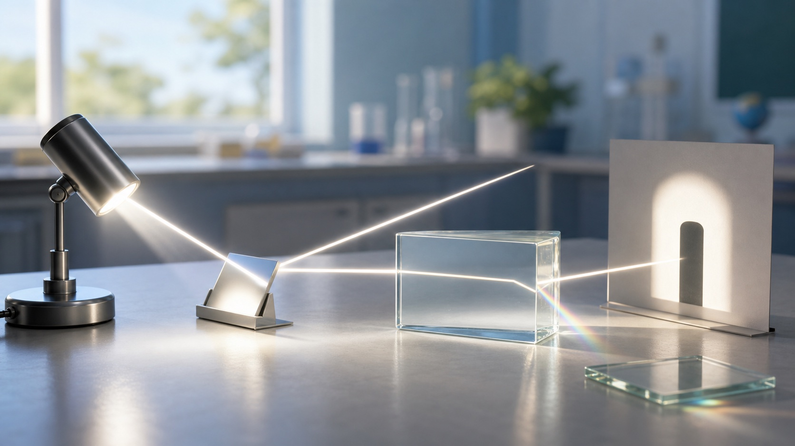

典型证据
小孔成像：倒立实像从哪里来
小孔只允许少量光线通过。物体上端发出的光穿过小孔后到达光屏下方，物体下端发出的光穿过小孔后到达光屏上方，所以光屏上的像是倒立的实像。
- 小孔成像说明光沿直线传播。
- 像能成在光屏上，所以属于实像。
- 孔太大时很多光线混在一起，像会变模糊。

第四章 · 光现象
这一章把“看见”拆成可观察的证据：光怎样直线传播，反射时角度怎样相等，折射为什么让筷子看起来弯了，白光又怎样分解成不同颜色。
第 1 节
光在同种均匀介质中沿直线传播。影子、小孔成像、日食月食都能用“光线被挡住或通过小孔”来解释。
挡板越靠近光源，屏上的影子越大。
典型证据
小孔只允许少量光线通过。物体上端发出的光穿过小孔后到达光屏下方，物体下端发出的光穿过小孔后到达光屏上方，所以光屏上的像是倒立的实像。
第 2 节
反射时，入射光线、反射光线和法线在同一平面内；反射角等于入射角。平面镜成像的像与物关于镜面对称。
反射角也为 35°，两个角都要从法线开始量。
镜面反射与漫反射
光滑表面让平行入射光反射后仍较整齐；粗糙表面各处朝向不同，反射光射向不同方向。每一条光线仍满足反射角等于入射角。
这是镜面反射：平行入射光反射后仍较整齐，容易形成清晰反光或镜面像。
第 3-5 节
光从一种介质斜射入另一种介质时传播方向通常会改变。三棱镜能把白光分解成多种色光，物体的颜色与它反射或透过的色光有关。
筷子插入水中看起来弯折，池水看起来变浅，都与光从水进入空气时折射有关。
白光通过三棱镜后分解成彩色光带，说明白光不是单一颜色的光。
不透明物体的颜色由它反射的色光决定；透明物体的颜色由它透过的色光决定。
作图与实验专项
试卷里的反射、折射和平面镜实验，通常不是问概念名字，而是让你把“角、法线、像的位置”画准确。
入射角和反射角都从法线量起，不是从镜面量起；入射光线和反射光线分居法线两侧，且与法线夹角相等。
光从水中斜射入空气时，折射光线远离法线，折射角大于入射角。
用玻璃板是为了确定像的位置；像和物关于镜面对称，虚像不能成在光屏上。
折射情境
选择你要画出的出射光线
先判断是反射还是折射，再决定出射光线和法线的夹角关系。
第四章检查
完成下面 8 题，检查自己是否抓住直线传播、反射、折射、作图和色散的核心。